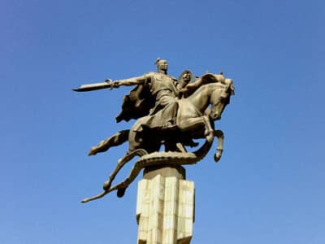
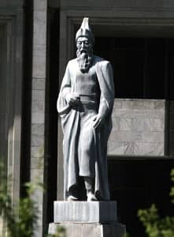

Kırgız ordusu savaşta nice kahramanlarını şehit verdi. Peşinden takip eden Çinlilerin önünü seçkin kahramanlar engelliyor, düşmanları oyalayıp halsizleşen askerler epey uzaklaştıktan sonra yoluna devam ediyorlardı.
Savaşçı Manas ordunun gayretini kırmayayım, itibarını düşürmeyeyim, birlik beraberliğini bozmayalım, Savaşçının elbiselerini çıkartmayayım, avulu ürkütmeyelim diye gayrete gelip Kanıkeyin Kaza için hazırlayıp verdiği ilacı omzundaki yaraya Acıbay’ın sürmesini istedi.
Çölde her ne kadar arayıp taradılarsa da er Almambet ile Er Çubak’ın cesetlerini bulamadılar. Derken gök yeleli Bozkurt Manas lekesi olmayan koyun gözlü, çili olmayan beyaz yüzlü Er Almambetin pekine geldiğinde söylediği vasiyeti tekrar hatırladı. ‘’Aslan manas , can dostum, ecelim gelip ölürsem güneş görmeyen şehri bozup git, cesedimi alıp git’’ demişti. Almambet.
Savaşçı manas can dostum Alman Bedin cesedini bulmadan gitmeyeceğim diye orduya emir verip her tarafı arattı.
Bir anda evliya sıfatlı Er Bakay tepenin arkasından Er Almambet’in cesedini katıra yükleyip götürmekte olan Çinli askerleri yakalamış olarak çıkageldi. Baktılar ki Çinliler büyük hana Almambetin cesedini müjde olarak götürüyorlardı.
Bu sırada Almambed’in Saralası hayvanların en akıllısı tay iken birlikte büyüdüğü sahibine başını eğerek yas tutu, ot yemedi, su içmedi zavallı hayvan. Aslan Bakay Almambet’in Saralasını çukurdan yakalayıp getirdi. Savaşçı Almambed bozkurdun cesedi Saralaya yüklenirken kalabalık halk bağırdı neferler ağladılar han ağladı, gökteki bulutta, yerdeki deve yavrusu da ağladı dağdaki keçi üzüldü ağaçların başı eğildi.
Bakay Sarala’yı geminden tutup bağlayarak Almambed’in cesedini ona emanet etti. Kaplan Manas belini doğrultamadan baltasına dayanıp dizlerinin üzerine oturdu. Siyah gözlerinden yaş döküp arkadaşına ağladı. Pekine gazaya giden Kırgız ordusu Çinlilere yenilip kahramanlarından ayrıldı. Hanlar bayraklarını indirdiler.
Savaşçı Manas’ın balta yarası kötüye gidiyordu. Şehit düşen can dostlarının acısından canı konuşmak da istemiyordu. Dünyası karardı. Er Bakay ata binmede zorluk çeken baygın savaşçı Manas için ardıç ağacından yapılmış tabut getirtip, altına kaba kumaştan yapılan yatak döşettirdi. Sonra ona Bozkurdu sıkıca bağladı. Yolculuk sırasında onu dört atlı nöbetle taşıdı.
Kanadı kırılıp, hüzünlü bir şekilde geri dönmekte olan ordunun peşinden eli silah tutmaya yarayan kahramanlar takipçilerle vur kaç savaşı yaparak düşmanı oyalayıp engelliyorlardı. Yola dertli Bakay kılavuzluk ediyordu. Ordunun başı ile ayağı üç günlük bir mesafeye kadar uzanmış olup gündüz soluk almadan, gece uyumadan yola devam ediliyordu.
Beli kırılmış orduya göz kulak olan Bakay kahramanlar ile akıl danışıp beklenmedik bir anda bu halimizle gitsek tüm milletin ödü patlar diye Talas’taki Kanıkey’e mektup yazıp haberci gönderdi.
Er Bakay’ın idare ettiği ordu yaklaştığında zavallı Kanıkey Semetey’e emziği vermişti, altı aylık bebek baş ağrıtacak şekilde bağıra bağıra ağladı. Çocuğun sesini işitince ardıç ağacından yapılan tabutta gözünü açmadan hareketsiz yatan kaplan Manas başını kaldırıp iki eline dayanarak Bakay’a çevirildi.
Er Bakay bağırıp ağlayan çocuk sesinin çıktığı yöne doğru hareket etti. Çocuğun sesini işitince gayrete gelen arslan Manas süvariyi durdurup tabuttan indi. Sanki savaşa gidecekmiş gibi ok işlemez zırhını giydi, kutsal beyaz kemerini kuşanıp yedeğe alınmış yürük Narbudan’a bindi.
Savaşçı Manas atına binip arslan gibi kurulup otururken güzellerin güzeli, dişilerin en nurlusu, altın kemer kuşanmış sevgili kadın Kanıkey oğlunu alarak Savaşçının karşısına çıkıverdi. Manas’ın sözüne alışık olan bahtsız Kanıkey bu isteği kabul etmedi, beşikteki ay gibi parlayan bebeğini bağrına bastı ve onu beyine vermedi. Bunun sebebi şuydu: Savaşçı tuttuğunu koparan arslan gibiydi. Ateş gibi yanan gözünde siyah bir beni vardı. Yüzü korkunçtu. Ona bakan kimse sağ kalmazdı. Bunu fark eden Han Manas, Kanıkey’e gülümseyerek kamçısını uzattı, Kanıkey Savaşçının kampçısını altı aylık bebeğinin alnına hafifçe dokundurduktan sonra geri verdi.
Yüce soylu Kanıkey, Manas’ın boynuna baltanın değdiğini ve onu yaraladığını gördü. Bakay ile akıl danışarak savaşçı herkesten uzak dursun diye, Muzdak başındaki Muz-Cayloo denen serin tepeye geçici olarak taşındı.
Duyarlı kadın Kanıkey, Batıya ve Doğuya mahsus adam gönderip hastalığa şifa veren en iyi ilaçları getirtti. Bin çeşit bitkiden yapılmış ve kaynatılmış ilacı Savaşçının yarasına sürdü Kanıkey.
Savaşçı Manas’ın yarası iyileştiğinde pınar gibi canlandı, acıları dinip gözleri fal taşı gibi açıldı, gün geçtikçe iyileşmeye başladı.
Han Manas eski haline geldikten sonra, sonbaharda, Talas boyunca yerleşti. Han Manas yokken acı çeken halkın gamını yine savaşçı Manas aldı. Şehit veren evlere at ve kurbanlık verdi, evi olmayana ev yaptırttı, fakirlere elbise giydirdi.
Han Almambet’in cesedini sağ salim ulaştıran mübarek tulparın boynuna sarılarak acı acı ağlayan savaşçı Han Manas Sarala’yı yedeğe alıp ak otağa getirdi. Han Manas’ın davulu çalındığında halk acele ak otağa toplandı. Er Almambet’in cesedini savaşçı Manas Çeç-Döbö’ye, Kırgızların adetine göre başını Pekin yönüne çevirip gömdü. Sarala da savaşçıyı ile birlikte gömüldü. Savaşçı Manas, Er Almambet’in otağına ağlayarak geldi. Savaşçı Manas konuşmaya başladıysa da başı döndü, vücudu sızladı, belini kımıldatamadan hareketsiz yata kaldı.
Biçare kadın Kanıkey başına kara günlerin geldiğini, beyinin iyileşemeyeceğini anladı. Gayrete gelerek evliya Bakay ile akıl danıştı. Er Bakay’ın yanına oturup derdini anlattı. Evliya sıfatlı Bakay söyleyeceklerini söyledi. Kanıkey ile Bakay Manas’ın huzuruna geldiler. Nazlı Kanıkey kimseye söylemeden, kimseye fark ettirmeden, necise göstermeden milletten gizleyerek, kuşkulananları kandırarak Manas’a yalnız kendisi baktı. Hatta kırk çoranın kahramanlarına bile sır vermedi.
Manas, halkın bülbülü Han Bakay’ı yanına çağırıp can dostlarıyla, yakın akrabalarıyla hanlar ve savaşçılarla gözüm açık iken bir görüşeyim diye hepsine gizlice haber gönderdi. Manas’ın gözleri genişçe açılmıştı. Pıhtı pıhtı kara kan kusuyor dermanı tükeniyordu. Kah bayılıyor, kah ayılıyordu.Derken yular gibi saçlarını tutup ağlayan yenge Kanıkey’e savaşçı Manas şöyle bir ricada bulundu:
Amca, çaylağı besleyip kuş kıldım, dağılan halkı toplayıp millet kıldım, yavru kuşunu eğitip alıcı kuş kıldım. Ben halkımdan razıyım. Kusurum olmuşsa küsmeyin. Kalabalık milleti toplayıp, gözü açık kahramanlarına kendin baş olup beni kara toprağın koynuna, Tanrıya ver.”
Savaşçı Manas vasiyetini hanımı Kanıkey ile Er Bakay’a söyledikten sonra dili tamamen tutuldu.
Han Manas’ın altın yularlı, yürüyüşüne hayvan, koşmasına rüzgar ulaşamayan Celmayan karanarı Ak otağın yanında, Savaşçının yattığı tarafta çöküp, boynunu uzattı. Gözlerinden yaş akıtarak yattı.
Akkula öldükten sonra, savaşçı Manas Karaça’nın kızı Saykal’ın hediye verdiği Taybuurul’u beğenip savaşta binmişti. Derin çukura rast gelse de duraklamadan koşup geçen kır at Savaşçının Ak otağının önündeki altın direğe kendisi gelip yedi gün ot yemeden, kımıldamadan yas tuttu zavallı hayvancık.
Acıbay haber vermeye pek istekli gözükmeyerek Kanıkey’e derdini anlattı:
Kanıkey gözyaşlarını tutamayarak, yüreği sızlayıp Taybuurul’u vermeye razı oldu. Ak otağın ortasındaki altın direğe bakıp başını yere eğip duran Taybuurul Acıbay’ı yaklaştırmıyor, eğeri takmasına izin vermiyor, yedeğe alsa da yürümüyordu. Savaşçıya yakın olan Buurul atın, bir kötülüğü, bir felaketi sezmiş gibi efendisine yas tuttuğunu gören Kanıkey’in gözleri boşalıverdi.
Sonunda Acıbay yürüyüşü, koşuşu tanıdık Kartkürön’e binip çok uzaklara kadar gidip haber ulaştırdı. Yılmayan Acıbay kırk günlük yolu yedi günde kat edip, haberi yerlerine ulaştırdı, düşman hanlara ayağının sesini bile duyurmadan belirlenen günde Talas’a döndü.
Zavallı kadın Kanıkey kimseye bildirmeden, kimseye gözükmeden Celpiniş Urum halkından Han Manas’ın aşına haberin ulaştığı yerlerden dostlar, tanıdıklar, ünlü bilgiçler arda ardına gelmeye başladılar.
Ceti-Suu’da yerleşen halkın atası olan ihtiyar, şu anda doksan beş yaşında idi. Milleti duasıyla zenginleştiren, tedbirli; halkın gönlünü kıracak iş yapmayacak kadar akıllı, kara Hıtay’ı idaresi altına alacak kadar kahraman Katagan Han’ı Koşoyhan Manas’ın aşına hizmet etmek için erkenden geldi.

Günümüz Kırgızistanı’ndaki Manas heykeli.
Keng Alay’a yerleşen, dokunduğunu sağ bırakmayan kibirli Er Töştük de eski dostumun aşında altmış gün hizmet edeceğim diye geldi.
Aşağıdaki Urum denen halktan, yani kırk günlük yerden hareket eden Urumhan’ın oğlu Kökbörü, can dostum hayatta ise elini sıkayım, oğlu Semetey’i görüp geleyim, hiç olmazsa ayaştan özür dileyim diye sarı altın, beyaz gümüşü atına yükleyip, Narbuudanını koşturup yanına hanımını ve on iki yaşında bir kahraman olan, eski elbise giymiş Koyonalı denen savaşçı oğlunu alarak geldi. Koyonalı’nın yaşı küçüktü ama bir arslan gibiydi, benzersiz alpti, nehir gibi kan akıtan, düşmanlarının canına okuyan kaplanın da kendisi idi. “Savaşçı ayaş atama kendim hizmet edeyim, aşının başında durayım” diye bileklerini sıvayıp işe girişti.
Savaşçının Otağına Bakay, Koşoy başta olmak üzere on iki hanı, çoraları, köleleri, dostları girip bir bir vedalaştılar. Manas ağlayan kahramanların iniltilerini eliyle işaret ederek bastırdı. Savaşçı, sanki öteki dünyaya gitmeyecekmiş gibi, kıyamet gününü görmeyecekmiş gibi, ne kaşını çatıyor, ne üzülüyordu, acı çektiğini belli etmeden, gayretinden hiçbir şey kaybetmeden dağlardaki kartallar gibi oturuyordu.
Dönüşü olmayan yere gitmekte olan Bozkurt Manas gözlerini tekrar açıp ellerini sıkıca tutan yaramaz çocuğa baktı. Manas bir daha konuşmadı, mizan top yıldızı dolduktan, kahramanlarla vedalaştıktan sonra elli iki yaşında vefat etti. Han otağındaki, direği altında yapılmış gök bayrağın yerine siyah bayrak asıldı. Dul kalan zavallı Kanıkey bir daha dönmemek üzere giden bozkurdun ardından sağu sağdı, ağladı.
Oh dönüşü olmayan yere giden beyim, dağda sayısız atların kaldı. Onlara bakıverin çocuklar. Beni cehennemde bırakma, beraber götür, bozkurdum. Siyah çerçeveli baltanı kıvırmadan kim yapabildi? Hiçbir şeye doymayan Argın, Kırgız halkını kavga ettirmeden kim idare edebilir? Beni bu acılara koymadan beraber götür Savaşçı beyim” diyordu dertli Kanıkey.
Savaşçı Manas’ın öldüğü gün yer sallandı, parlayıp duran güneş tutuldu, altı gün simsiyah karanlık oldu, ay çıkmadı. Gökte bulutlar ağladı, yerde kuşlar ağladı. Bu sırada savaşçı Manas’ın yattığı yere çöken Karanar’ın yanına Kumbulak’ın deresinden bulup getirilen Kumayık da yattı, hiçbir şey yemeden insan gibi kendi kendine uludu.

Kırgızistan’daki bir başka Manas heykeli.
Han Manas’ın Akşumkarı (sungur) altın iplerini parçalayıp göklere çıktı. Ak otağın üzerinde yedi kere döndükten sonra son bir kere daha öterek gözden kayboldu.
Ak otaklar siyaha büründü, halk yas tutup siyah giyindi.
Ak otağa ulaştıklarında sağ taraftan on bin, sol taraftan on bin kahraman alnına siyah bağlayıp, yolun iki kenarında diz çöküp durdular. Ortada geniş yol bırakıp, dağları sarsacak bir şekilde ağladılar. Uzaktan savaşçıyı görmeye gelenler kederlenerek ortada bırakılan yol ile ak otağa ulaştılar. Savaşçı Manas’ın cesedi kırk kanatlı üç ak otağa konuldu, birbirine bitişik olsun diye otakların sırıklarından birer tanesi sökülmüştü.
Efendimiz yokluğunda, başı yok diye, hayvanlarımızı dağıtmasın, kıyım yapmasın, matemli halka eziyet etmesin. Sizden başka kimim var ki benim? Destek olacak sizsiniz, halkı idare edin, danışarak iş görün. Han ağanızın cenazesini hürmet ile toprağa verelim, ruhu şad olsun.”
Kanıkey ağlayıp dururken, terbiyeli, iyi niyetli doğan Abike, azimle işe girişip, telaşa kapılan halk arasında dolaşıp, çığlıkla ağlayarak taziye için gelenleri özel olarak dikilen çadırlara alıp konukları evlere paylaştırdı.
Kötü niyetliler ölü için adak verme işleri umurumda olmadan, kendileri konuk olarak sakin sakin oturdular. Karanlık basarken, halk uyumaya çekilirken, asil kadın Kanıkey endişeli bir halde amcası Koşoy’a vardı. Han Koşoy, Han Bakay, Er Töştük, Er Kökbörü, Savaşçı Koyonalı olmak üzere Kanıkey’le akıl danıştılar.
Karanlık gecede bahtsız zavallı Kanıkey akıl danıştığı kahramanlarla Han Manas’ın cesedini yıkayıp, kefene sardı, tabuta koyup, üzerine kilimle örttü. Savaşçının cenazesini kırk mollaya kaldırtıp kendisi yol başlayarak önceden hazırlattığı mezara götürdüler. .
Manas daha ölmeden hazırlanan mezarı gören kahramanların hayretten ağızları açık kaldı. Erenler Manas’ın cenazesinin yanına kılıçlarını koydular, sonra dağın ağzını kapatıp sabaha karşı kimseye fark ettirmeden karargaha döndüler.
Sadece sözde değil, işte de becerikli olan arslan Bakay kavak tahtasından Manas’a benzeterek bir maket yaptırdı. Onu kumaşa sarıp, sepilenmiş deri ile yapıştırdı, üzerini beyaz keçeyle örttürüp tabutuna koydu. Her şey çoktan hazırlandı.
Er Koşoy, Er Bakay, Er Töştük, Er Koyonalı Kanıkey’in yanında yas tutup oturdular. Bu dünyadan göç eden arslanın aşını muhteşem bir şekilde verelim diye ak buğday ununu çiğneyip, Kelime-i Şahadet okuyup, antlaşarak geri dönmeye başladılar.
Han Koşoy’un Zühre yıldızına benzeyen iri gözlerinden akan yaşları beyaz sakallarından sızarak atının yelelerine düştü. “Yaşacağını yaşamış olan beni niye almadın Tanrım?” diye dertli dertli ağlayarak yurduna döndü Han Koşoy.
Geniş Talas’ı sarsacak şekilde “Yer altında yaşarken Manas gibi arslan’ı görmedin, yer yüzünde yaşarken de Manas’a denk geleni görmedim, vefasız dünya. Savaşçımla birlikte niye ölmedim?” diyen Er Töştük de yerine döndü.
Gökyeleli bozkurt Manas ile sevgili dostu olan Urumhan’ın oğlu Kökbörü yadigar olarak Savaşçının çadırını almıştı. Oğluyla birlikte geri dönerken yolun yarısından düşmanlarının saldırısına uğrayıp on iki yaşındaki yalnız oğlu Koyonalı’yı kaybetti. Kökbörü, Koyonalı’nın cesedini bulamadı. Nasili Han’ın kızı olan akıllı Külnar üzülen kocasını şöyle dedi: “Gözbebeğin oğlunu can dostun Manas istediğinde vermemişsin padişahın, Tanrının emriyle sırdaşın Manas’a yoldaş olmaya gitmiş oğlun.” Üzülme dedi.
Savaşçı Manas’ın ölümünden bir yıl geçti. Yalan dünyada nice nehirler taşıp, göller dalgalanıp, nice yamaçlar bozuldu. Yapmaya söz verdiği aşa hanlar gelmediler. Manas’ın babası Cakıp da, onun oğulları Abike, Köböş de hanlığı kapma çekişmesine girdiği için kabilenin bereketi kaçtı. Kahramanın aşını veremediler.
Tündüğü yapılmayan ak otakta yas tutan Kanıkey savaşçıdan kalan tek oğlu Semetey’i bağrına basıp hüzünlü hüzünlü şiir söyleyerek ağlıyordu. Gökyeleli kurdun atı, altın direğe mahzun bakıp duruyordu. Han karargahının kalesinin dışında, ıssız yerde, kara taşın üzerinde karargaha yaklaşmadan ağlaya ağlaya gözleri kararan ihtiyar Bakay, büyük bir üzüntü içinde oturuyordu.
Manas’ın hikayesi böyle olmuştur, sözümüz tamam olmuştur.
SON